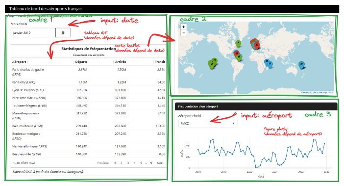

source("R/create_data_list.R")Un tableau de bord du trafic aérien avec ou
1 Introduction
1.1 Objectif
L’objectif de ce tutoriel est d’amener, pas à pas, à la conception voire à la mise à disposition d’un tableau de bord (dashboard) du trafic aérien avec . Une démonstration de cette application est disponible à l’adresse https://rplane-dashboard.kub.sspcloud.fr/. Ce tutoriel est également l’occasion d’apprendre quelques bonnes pratiques pour les projets et .
Afin de se concentrer sur la démarche, cette application interactive présentera un nombre limité de fonctionnalités. L’objectif est de construire progressivement celle-ci en suivant les étapes logiques du déroulement d’un projet de développement d’application interactive: découverte et exploration des données, création de statistiques descriptives et de visualisations simples sur un jeu de données, extension du nombre de visualisations accessibles par la création d’une application. Ce tutoriel est également l’occasion de découvrir quelques bonnes pratiques de programmation avec afin de rendre les projets plus fiables, évolutifs et lisibles.
Les exercices de conception pas à pas de l’application s’adressent aussi bien à des débutants qu’à des utilisateurs plus experts. La mise à disposition, c’est-à-dire la mise en production de cette application, fait appel à des concepts et outils plus avancés et est donc moins accessible à des débutants.
Tip
Si vous désirez aller plus loin sur certaines dimensions de ce projet, vous pouvez tout à fait essayer de vous-mêmes d’introduire de nouveaux ingrédients dans l’application que vous développez.
1.2 Pourquoi faire une application interactive ?
Cette question peut apparaître naive. Pourtant, elle mérite d’être posée car elle permet de réfléchir à l’objectif de l’application et à son public cible. Cette réflexion devrait être menée systématiquement car elle guide les choix techniques ultérieurs et la répartition des tâches entre les différents profils pouvant intervenir dans la vie du projet s’il est mis en production (statisticien ou data scientist, équipes informatiques…).
En général, on fait de la visualisation de données car les sources de données exploitées présentent tellement de dimensions pouvant intéresser un utilisateur qu’il est plus pertinent de le laisser explorer les données que de définir pour lui les statistiques à mettre en avant. L’interactivité permise par les sites web est particulièrement adaptée pour cela: le fait d’afficher ou masquer des visualisations en fonction de choix de l’utilisateur évite de noyer l’information par rapport à des supports figés.
Les frameworks Shiny (), Streamlit ou Dash () permettent de rapidement mettre en oeuvre ce type de site web. Pour une phase de construction d’un prototype, c’est un choix technique intéressant qui peut provoquer l’effet wahou attendu pour lancer le projet à plus grande échelle. En effet, ces solutions techniques permettent, avec les outils bien connus des praticiens de la donnée, ou principalement, de créer rapidement un site web fonctionnel, ergonomique et effectuant des opérations en fonction d’actions de l’utilisateur sur la page web. Tout ceci sans avoir à maîtriser des notions complexes de développement web.
Néanmoins, passée cette phase d’expérimentation, le partage de ces applications, au-delà d’un partage d’écran pour des démonstrations, est moins évident. C’est parce que la connaissance de ces notions complexes qui permettent le bon fonctionnement d’un site web et dont la maîtrise n’est pas nécessaire lorsqu’on se lance dans la construction du site deviennent utiles passée la phase d’expérimentation. Celles-ci dépassent néanmoins le champ de compétence des statisticiens ou data scientists.
Autrement dit, si le projet a l’ambition d’être partagé à une audience large qui n’a pas les compétences techniques pour faire tourner elle-même le code, il convient de prendre en compte le fait qu’il faudra dans l’équipe projet des compétences de développement web. Si le projet est expérimental, c’est moins un problème: Shiny, Dash ou Streamlit permettront d’avoir rapidement un prototype viable.
Il existe heureusement des solutions techniques plus simples à mettre en oeuvre que Shiny, Streamlit ou Dash. Les sites web statiques font partie de cet éventail des possibles et représentent souvent une alternative pertinente aux applications interactives à condition qu’ils soient bien pensés. Ils sont notamment pertinents pour les applications de visualisation de données où cette dernière est déjà préparée en amont. Avoir un serveur R ou Python se justifie en effet si des étapes complexes de structuration de données interviennent. Néanmoins, si celles-ci ne sont pas nécessaires, un simple enrobage avec un constructeur de site comme Quarto peut suffire, à condition que les productions graphiques ne soient pas trop complexes à créer. Pour des sites faisant intervenir des interactions complexes entre actions d’un utilisateur (bouton, menu déroulant, etc. ) et affichage, il faudra recourir à du Javascript (technologie utilisée par les sites spécialisés dans la dataviz), ce qui fait, à nouveau, appel à des compétences qui dépassent celles des data scientists ou statisticiens classiques.
En résumé, les éléments ci-dessus ont vocation à servir de mise en garde. Shiny, Dash ou Streamlit sont d’excellents outils techniques lorsqu’ils sont utilisés à bon escient. Néanmoins, leur simplicité d’usage ne doit pas amener à oublier de se poser des questions vitales comme celui du cycle de vie du projet, du public cible ou encore de la compétence des équipes amenées à le maintenir s’il perdure au-delà d’une phase d’expérimentation.
Site statique vs application réactive
La solution que nous allons proposer pour les sites statiques, Quarto associé à Github Pages, peut être utilisée dans le cadre des parcours “rapport reproductible” ou “dashboard / application interactive”.
La distinction principale entre ces deux approches est qu’elles s’appuient sur des serveurs différents. Un site statique repose sur un serveur web là où Streamlit s’appuie sur serveur classique en backend. La différence principale entre ces deux types de serveurs réside principalement dans leur fonction et leur utilisation:
- Un serveur web est spécifiquement conçu pour stocker, traiter et livrer des pages web aux clients. Cela inclut des fichiers HTML, CSS, JavaScript, images, etc. Les serveurs web écoutent les requêtes HTTP/HTTPS provenant des navigateurs des utilisateurs et y répondent en envoyant les données demandées.
- Un serveur backend classique est conçu pour effectuer des opérations en réponse à un front, en l’occurrence une page web. Dans le contexte d’une application
Streamlit(resp.Shiny), il s’agit d’un serveur avec l’environnementPython(resp.R) ad hoc pour exécuter le code nécessaire à répondre à toute action d’un utilisateur de l’application.
2 Exploration des données de trafic aérien
Pour pouvoir proposer un tableau de bord pertinent, le premier geste à avoir est d’explorer soi-même les données. L’objectif de cette partie est de guider le travail exploratoire. Le travail ultérieur sur l’application visera à consolider et généraliser ces explorations de données.
2.1 Préliminaire: récupérer le projet squelette avec Git
Si vous disposez d’un compte sur le sspcloud, la méthode recommandée pour se lancer dans ce tutoriel est de cliquer sur le bouton suivant
Si vous avez utilisé le lien de lancement rapide mis à disposition sur la page inseefrlab.github.io/funathon2024/ ou ci-dessus ☝️, vous pouvez sauter l’étape de récupération du modèle de projet avec Git , cela a été fait automatiquement lors de la création de votre environnement RStudio. Cela ne vous dispense d’ailleurs pas de faire du Git tout au long du tutoriel, c’est une bonne pratique, même sur des projets ponctuels ou vous êtes seuls à travailler.
Récupérer le projet si vous n’avez pas utilisé le bouton proposé
La fiche utilitR sur l’utilisation de Git explicite la démarche générale pour récupérer du code grâce à Git. Il est recommandé de lire celle-ci si vous n’êtes pas familier de Git.
Les étapes suivantes permettront de récupérer le projet:
1️⃣ En premier lieu, dans RStudio, créer un nouveau projet et sélectionner Version Control.

2️⃣ Choisir Git, ce qui devrait ouvrir une fenêtre similaire à celle ci-dessous:

3️⃣ Dans la fenêtre Repository URL, passer la valeur
https://github.com/inseefrlab/funathon2024_sujet2.gitlaisser les valeurs par défaut qui viennent ensuite et créer le projet.
Après avoir ouvert un terminal dans RStudio, faire
git clone https://github.com/inseefrlab/funathon2024_sujet2.gitpuis, dans l’explorateur de fichiers (fenêtre en bas à droite), cliquer sur le fichier RTraffic.Rproj pour ouvrir le projet.
Le projet récupéré comporte de nombreux fichiers. Nous allons progressivement les découvrir dans ce tutoriel. A l’heure actuelle, on peut se concentrer sur les fichiers suivants:
|- renv.lock
|- global.R
|- server.R
|- ui.RLe premier fichier correspond à la liste des packages nécessaires pour reproduire l’environnement. Il a été généré automatiquement grâce à un écosystème renv particulièrement adapté pour assurer la reproductibilité de projets R (voir la suite).
Les fichiers server.R et ui.R constituent le coeur de notre application Shiny. Ils représentent, respectivement, le moteur de calcul (le serveur) et l’interface utilisateur de notre application. Le fichier global.R stocke un certain nombre d’objets utiles à l’application mais qui n’ont pas besoin d’être recalculé à chaque action sur l’interface graphique. Nous allons progressivement construire ces fichiers pendant les différents exercices.
2.2 Installer les packages nécessaires pour ce tutoriel
2.2.1 Principe
Pour progresser dans ce tutoriel, un certain nombre de packages doivent être installés. Sans eux, même avec le code de l’application, vous ne serez pas en mesure de reproduire celle-ci.
Les bonnes pratiques pour la gestion de l’environnement sont assez proches en et . Le principal général est qu’il existe des outils qui permettent à un utilisateur de lister l’ensemble des packages dans son environnement avec leur version. Grâce à cette liste, d’autres personnes pourront reproduire l’application si elles disposent des mêmes inputs (le code, les données…).
En effet, il est important de voir l’application comme le résultat de la combinaison de plusieurs ingrédients. Dans notre cas, nous en avons trois:
- Du code
RouPython: celui-ci a été récupéré par le biais deGit - Des éléments de configuration:
- Des données: nous évoquerons celles-ci lors de la prochaine partie.

De manière générale, c’est une bonne pratique de structurer son projet comme une combinaison de ces facteurs. Cela vous amènera à faire des projets plus reproductible mais aussi à la structure plus lisible.
Pour les utilisateurs de R, la formation de l’Insee aux bonnes pratiques consacre une partie aux environnements reproductibles avec renv. Pour les utilisateurs de Python, le cours de mise en production de projets data science consacre un chapitre au sujet.
2.2.2 Créer l’environnement
Si vous avez déjà tenté de partager un code qui fonctionnait chez vous, il est presque certain que la personne ayant voulu le réutiliser a rencontré une erreur si elle a tenté de le faire tourner. C’est tout à fait normal car vous avez distribué votre code, éventuellement vos données, mais pas le troisième pilier de l’image précédente, à savoir la configuration de l’environnement dans lequel votre code fonctionnait. La solution la plus fiable, mais peu pratique, serait de donner votre ordinateur à la personne qui tente de réutiliser votre code. En livrant votre ordinateur, vous fournissez votre environnement de travail mais également beaucoup d’éléments supplémentaires qui ne sont pas indispensables à l’application.
Une solution plus simple est de fournir les spécifications qui ont permis à votre code de fonctionner. Dans un monde idéal, il s’agit de fournir la liste des packages et leur version. Si la personne à qui vous partagez votre code et vos données a cette même liste de versions de packages, et pas de packages supplémentaires venant polluer l’environnement, les chances d’avoir la même application que vous sont très élevées.
renv est un gestionnaire de packages qui permet de faire ces deux opérations:
- Enregistrer la liste de packages après avoir fait tourné un code
- Restaurer l’environnement à partir de cette liste
En l’occurrence, pour vous, l’important est le second point: pouvoir recréer l’environnement nécessaire au bon fonctionnement de l’application. Ceci est très simple grâce à la commande
renv::restore()Cette commande doit être lancée depuis la console R ouverte dans le projet qui a été récupéré. L’environnement créé n’est pas figé. Il est tout à fait possible, ensuite, d’installer des packages supplémentaires par le biais de install.packages. L’environnement proposé par notre fichier renv.lock est le minimum requis pour reproduire l’application mais ce n’est pas un environnement figé. Si vous ajoutez des packages utiles pour votre application, avant la phase de mise en production, n’oubliez pas de faire renv::snapshot() pour mettre à jour le fichier renv.lock (c’est le point 1. évoqué précédemment).
Ce que
renv évite
On retrouve parfois sur internet un code similaire à celui-ci :
# A ne pas reproduire chez vous 😨
if (!requireNamespace("dplyr", quietly = TRUE)) {
install.packages("dplyr")
}C’est une gestion artisanale de l’environnement qui n’est pas conseillée. renv sera plus simple et plus fiable.
Maintenant que nous disposons d’un environnement fonctionnel, nous pouvons avancer sur la conception du projet. La première étape est d’explorer les jeux de données que nous utiliserons dans l’application.
3 Récupérer les données
Les sources sont listées dans le fichier sources.yaml. Notre application utilisera quatres sources différentes:
- Le trafic au niveau de chaque aéroport (format CSV)
- Le nombre de passagers pour différentes liaisons (format CSV)
- Le trafic pour différentes compagnies (format CSV)
- Les localisations des aéroports (format geojson)
Une bonne pratique, lorsqu’on utilise plusieurs sources, est de lister celles-ci dans un fichier YAML plutôt que de les inscrire en brut dans le code. Ce dernier sera plus lisible grâce à cette approche.
Voir le fichier sources.yml
sources.ymlsources.yml
# Jeux de données
# https://www.data.gouv.fr/fr/datasets/trafic-aerien-commercial-mensuel-francais-par-paire-daeroports-par-sens-depuis-1990/
airports:
2018: "https://www.data.gouv.fr/fr/datasets/r/3b7646ea-276c-4c9b-8151-1e96af2adbf9"
2019: "https://www.data.gouv.fr/fr/datasets/r/e8efa154-045e-4f8f-a1d7-76a39fa03b7b"
2020: "https://www.data.gouv.fr/fr/datasets/r/6717f107-be00-4b4b-9706-fa0e5190fb69"
2021: "https://www.data.gouv.fr/fr/datasets/r/2f9f6e54-e2d7-4e85-b811-2e5e68fa5bca"
2022: "https://www.data.gouv.fr/fr/datasets/r/f1bd931e-c99e-41ce-865e-9e9785c903ec"
liaisons:
2018: "https://www.data.gouv.fr/fr/datasets/r/9c5354ad-31cb-4217-bc88-fb7c9be22655"
2019: "https://www.data.gouv.fr/fr/datasets/r/0c0a451e-983b-4f06-9627-b5ff1bccd2fc"
2020: "https://www.data.gouv.fr/fr/datasets/r/dad30bed-7276-4a67-a1ab-a856e6e01788"
2021: "https://www.data.gouv.fr/fr/datasets/r/bbf6492d-86ac-43a0-9260-7df2ffdb5a77"
2022: "https://www.data.gouv.fr/fr/datasets/r/af8950bc-e90a-4b7e-bb81-70c79d4c3846"
compagnies:
2018: "https://www.data.gouv.fr/fr/datasets/r/ddfea6a0-df7e-4402-99fc-165f573f2e10"
2019: "https://www.data.gouv.fr/fr/datasets/r/8421e029-c8c7-410d-b38c-54455ac3265d"
2020: "https://www.data.gouv.fr/fr/datasets/r/818eec10-6122-4788-8233-482e779ab837"
2021: "https://www.data.gouv.fr/fr/datasets/r/0b954774-ccd1-43ec-9b5a-f958fba03e87"
2022: "https://www.data.gouv.fr/fr/datasets/r/bcec3e1e-940a-4772-bc28-0d7b2b53c718"
geojson:
airport: "https://minio.lab.sspcloud.fr/projet-funathon/2024/sujet2/aeroports.geojson"
3.1 Importer la liste des sources disponibles
Voir la solution à cet exercice
#' Creates a 2-levels list of urls, pointing to open source data
#'
#' @param source_file yaml file containing data urls
#' @return list (level 1 = concepts, level 2 = year).
#'
#' @examples
#' create_data_list("sources.yml")
#'
create_data_list <- function(source_file){
catalogue <- yaml::read_yaml(source_file)
return(catalogue)
}La solution est dans le fichier R/create_data_list.R. Elle peut être importée dans l’environnement global grâce à la commande:
3.2 Importer les premières bases
urls <- create_data_list("sources.yml")A l’issue de cet exercice, vous devriez avoir le fichier R/import_data.R suivant
Le fichier R/import_data.R attendu
import_airport_data <- function(list_files){
pax_apt_all <- readr::read_csv2(
list_files,
col_types = cols(
ANMOIS = col_character(),
APT = col_character(),
APT_NOM = col_character(),
APT_ZON = col_character(),
.default = col_double()
)
) %>%
clean_dataframe()
return(pax_apt_all)
}
import_compagnies_data <- function(list_files){
pax_cie_all <- readr::read_csv2(
file = list_files,
col_types = cols(
ANMOIS = col_character(),
CIE = col_character(),
CIE_NOM = col_character(),
CIE_NAT = col_character(),
CIE_PAYS = col_character(),
.default = col_double()
)
) %>%
clean_dataframe()
return(pax_cie_all)
}
import_liaisons_data <- function(list_files){
pax_lsn_all <- readr::read_csv2(
file = list_files,
col_types = cols(
ANMOIS = col_character(),
LSN = col_character(),
LSN_DEP_NOM = col_character(),
LSN_ARR_NOM = col_character(),
LSN_SCT = col_character(),
LSN_FSC = col_character(),
.default = col_double()
)
) %>%
clean_dataframe()
return(pax_lsn_all)
}La carte leaflet que vous devriez avoir obtenue à la fin de l’exercice est la suivante:
leaflet(airports_location) %>%
addTiles() %>%
addMarkers(popup = ~Nom)A l’issue de l’exercice, le code centralisé dans le script R/import_data.R peut être importé via le code suivant
source("R/import_data.R") Vous pouvez initier un script nommé main.R avec les lignes suivante:
MONTHS_LIST = 1:12
# Load data ----------------------------------
urls <- create_data_list("./sources.yml")
pax_apt_all <- import_airport_data(unlist(urls$airports))
pax_cie_all <- import_compagnies_data(unlist(urls$compagnies))
pax_lsn_all <- import_liaisons_data(unlist(urls$liaisons))
airports_location <- st_read(urls$geojson$airport)en les faisant précéder de l’import des scripts que nous avons déjà créé dans le dossier R:
source("R/create_data_list.R")
source("R/import_data.R")
source("R/clean_dataframe.R")Une bonne pratique est de tester son script dans une session vierge. Cela amène à construire pas à pas une chaine plus reproductible. Pour cela,
- Aller dans les options de
RviaTools > Global Optionset décocher la caseRestore .RData into workspace at setup - Redémarrer votre session
Rvia le menuSession > Restart Rou le raccourci CTRL+SHIFT+F10
Et exécuter votre fichier main.R. Vous devriez rencontrer des erreurs car nous n’avons pas géré les import de librairies dans ce script puisque notre session actuelle ne bénéficie plus des import antérieurs.
Une bonne pratique pour comprendre cette exigence de reproductibilité est d’itérativement ajouter les librairies utiles à mesure qu’on rencontre des erreurs (notre code étant très rapide à tourner, cette logique d’essai-erreur n’est pas très coûteuse). Si vous ne désirez pas faire ceci (dommage, c’est un bon exercice), vous pouvez trouver les imports de packages à faire pour que notre script soit reproductible.
L’environnement minimal de reproductibilité pour que le script main.R fonctionne
library(readr)
library(dplyr)
library(stringr)
library(sf)Ces librairies sont à écrire au début de main.R.
4 Exploration des données
4.1 Le trafic par aéroport
Pour commencer, nous allons prototyper la production d’une figure sur le trafic aérien au niveau d’un aéroport. Cela nous facilitera ensuite l’intégration dans une application interactive.
Pour cela, nous allons créer les deux objets temporaires suivants
liste_aeroports <- unique(pax_apt_all$apt)
default_airport <- liste_aeroports[1]
default_airport[1] "FMCZ"
Exercice 3: graphiques de fréquentation des aéroports
- Créer une variable
traficégaleapt_pax_dep + apt_pax_tr + apt_pax_arr - Ne conserver que les données relatives à l’aéroport
default_airport - Créer une variable
datequi utilise les colonnesanetmois. Cette variable de date doit être au formatdate, pas au formatchrEnchaînement des opérations attendues à cette étape
library(readr)
library(dplyr)
library(stringr)
library(sf)
library(plotly)
source("R/import_data.R")
source("R/create_data_list.R")
source("R/clean_dataframe.R")
source("R/figures.R")
# Load data ----------------------------------
urls <- create_data_list("./sources.yml")
pax_apt_all <- import_airport_data(unlist(urls$airports))
pax_cie_all <- import_compagnies_data(unlist(urls$compagnies))
pax_lsn_all <- import_liaisons_data(unlist(urls$liaisons))
airports_location <- st_read(urls$geojson$airport)
liste_aeroports <- unique(pax_apt_all$apt)
default_airport <- liste_aeroports[1]
trafic_aeroports <- pax_apt_all %>%
mutate(trafic = apt_pax_dep + apt_pax_tr + apt_pax_arr) %>%
filter(apt %in% default_airport) %>%
mutate(
date = as.Date(paste(anmois, "01", sep=""), format = "%Y%m%d")
)- Faire une figure
ggplottoute simple pour voir la dynamique des données afin d’obtenir une figure similaire à celle-ci
figure_ggplot
Nous allons faire une application interactive par la suite. Il est donc plus intéressant d’avoir une figure un minimum réactive pour impliquer l’utilisateur de l’application.
- Il est donc plus pertinent de faire une figure avec la librairie
plotly. Pour cela, vous pouvez vous inspirer de cette page
Le code pour générer la figure
pax_apt_all <- import_airport_data(unlist(urls$airports))
pax_cie_all <- import_compagnies_data(unlist(urls$compagnies))
pax_lsn_all <- import_liaisons_data(unlist(urls$liaisons))
airports_location <- st_read(urls$geojson$airport)
liste_aeroports <- unique(pax_apt_all$apt)
default_airport <- liste_aeroports[1]
trafic_aeroports <- pax_apt_all %>%
mutate(trafic = apt_pax_dep + apt_pax_tr + apt_pax_arr) %>%
filter(apt %in% default_airport) %>%
mutate(
date = as.Date(paste(anmois, "01", sep=""), format = "%Y%m%d")
)
# VALORISATIONS ----------------------------------------------
figure_ggplot <- trafic_aeroports %>%
ggplot(.) + geom_line(aes(x = date, y = trafic))
figure_plotly <- plot_airport_line(trafic_aeroports,default_airport)Le code complet pour répliquer cet exercice est donné ci-dessous.
Code de l’exercice
library(readr)
library(dplyr)
library(stringr)
library(sf)
library(plotly)
source("R/import_data.R")
source("R/create_data_list.R")
source("R/clean_dataframe.R")
source("R/figures.R")
# Load data ----------------------------------
urls <- create_data_list("./sources.yml")
pax_apt_all <- import_airport_data(unlist(urls$airports))
pax_cie_all <- import_compagnies_data(unlist(urls$compagnies))
pax_lsn_all <- import_liaisons_data(unlist(urls$liaisons))
airports_location <- st_read(urls$geojson$airport)
liste_aeroports <- unique(pax_apt_all$apt)
default_airport <- liste_aeroports[1]
trafic_aeroports <- pax_apt_all %>%
mutate(trafic = apt_pax_dep + apt_pax_tr + apt_pax_arr) %>%
filter(apt %in% default_airport) %>%
mutate(
date = as.Date(paste(anmois, "01", sep=""), format = "%Y%m%d")
)
# VALORISATIONS ----------------------------------------------
figure_ggplot <- trafic_aeroports %>%
ggplot(.) + geom_line(aes(x = date, y = trafic))
figure_plotly <- plot_airport_line(trafic_aeroports,default_airport)Nous proposons de le transformer en fonction, ce sera plus simple à intégrer ultérieurement dans notre application
Fichier R/figures.R à l’issue de cet exercice
R/figures.R
plot_airport_line <- function(df, selected_airport){
trafic_aeroports <- df %>%
mutate(trafic = apt_pax_dep + apt_pax_tr + apt_pax_arr) %>%
filter(apt %in% selected_airport) %>%
mutate(
date = as.Date(paste(anmois, "01", sep=""), format = "%Y%m%d")
)
figure_plotly <- trafic_aeroports %>%
plot_ly(
x = ~date, y = ~trafic,
text = ~apt_nom,
hovertemplate = paste("<i>Aéroport:</i> %{text}<br>Trafic: %{y}") ,
type = 'scatter', mode = 'lines+markers')
return(figure_plotly)
}Par la suite, nous pouvons ajouter la ligne suivante à notre fichier main.R
source("R/figures.R")et utiliser cette fonction à la fin du fichier.
Fichier main.R à l’issue de cet exercice
main.R
library(readr)
library(dplyr)
library(stringr)
library(sf)
library(plotly)
source("R/import_data.R")
source("R/create_data_list.R")
source("R/clean_dataframe.R")
source("R/figures.R")
# Load data ----------------------------------
urls <- create_data_list("./sources.yml")
pax_apt_all <- import_airport_data(unlist(urls$airports))
pax_cie_all <- import_compagnies_data(unlist(urls$compagnies))
pax_lsn_all <- import_liaisons_data(unlist(urls$liaisons))
airports_location <- st_read(urls$geojson$airport)
liste_aeroports <- unique(pax_apt_all$apt)
default_airport <- liste_aeroports[1]
trafic_aeroports <- pax_apt_all %>%
mutate(trafic = apt_pax_dep + apt_pax_tr + apt_pax_arr) %>%
filter(apt %in% default_airport) %>%
mutate(
date = as.Date(paste(anmois, "01", sep=""), format = "%Y%m%d")
)
# VALORISATIONS ----------------------------------------------
figure_ggplot <- trafic_aeroports %>%
ggplot(.) + geom_line(aes(x = date, y = trafic))
figure_plotly <- plot_airport_line(trafic_aeroports,default_airport)4.2 Tableau HTML pour afficher des données
La première valorisation que nous intégrerons dans notre application est le modèle de figure ci-dessus. La deuxième sera un tableau permettant de visualiser certaines données directement dans le dashboard.
Pour le prochain exercice, vous pourrez utiliser ces objets
YEARS_LIST <- as.character(2018:2022)
MONTHS_LIST <- 1:12Voici une proposition de script main.R à l’issue de cet exercice
Code de l’exercice
library(readr)
library(dplyr)
library(stringr)
library(sf)
library(ggplot2)
library(plotly)
library(leaflet)
source("R/import_data.R")
source("R/create_data_list.R")
source("R/clean_dataframe.R")
source("R/divers_functions.R")
source("R/figures.R")
YEARS_LIST <- as.character(2018:2022)
MONTHS_LIST <- 1:12
year <- YEARS_LIST[1]
month <- MONTHS_LIST[1]
# Load data ----------------------------------
urls <- create_data_list("./sources.yml")
pax_apt_all <- import_airport_data(unlist(urls$airports))
pax_cie_all <- import_compagnies_data(unlist(urls$compagnies))
pax_lsn_all <- import_liaisons_data(unlist(urls$liaisons))
airports_location <- st_read(urls$geojson$airport)
liste_aeroports <- unique(pax_apt_all$apt)
default_airport <- liste_aeroports[1]
# OBJETS NECESSAIRES A L'APPLICATION ------------------------
trafic_aeroports <- pax_apt_all %>%
mutate(trafic = apt_pax_dep + apt_pax_tr + apt_pax_arr) %>%
filter(apt %in% default_airport) %>%
mutate(
date = as.Date(paste(anmois, "01", sep=""), format = "%Y%m%d")
)
stats_aeroports <- summary_stat_airport(
create_data_from_input(pax_apt_all, year, month)
)
stats_liaisons <- summary_stat_liaisons(
create_data_from_input(pax_lsn_all, year, month)
)
# VALORISATIONS ----------------------------------------------
figure_plotly <- plot_airport_line(trafic_aeroports,default_airport)
Nous avons maintenant tous les ingrédients pour faire un tableau de statistiques descriptives lisible et esthétique. Pour cela, nous allons utiliser le package GT. Avant de créer cette table, nous allons créer une colonne supplémentaire:
stats_aeroports_table <- stats_aeroports %>%
mutate(name_clean = paste0(str_to_sentence(apt_nom), " _(", apt, ")_")
) %>%
select(name_clean, everything())Celle-ci nous permettra, une fois mise en forme, d’avoir une colonne plus esthétique.
Les réponses aux différentes questions sont données de manière successives ci-dessous. La table finale, obtenue à l’issue de l’exercice est la suivante:
Réponse question 1
library(gt)
table_aeroports <- gt(stats_aeroports_table)
table_aeroportsRéponse question 2
table_aeroports <- table_aeroports %>%
cols_hide(columns = starts_with("apt"))
table_aeroportsRéponse question 3
table_aeroports <- table_aeroports %>%
fmt_number(columns = starts_with("pax"), suffixing = TRUE)
table_aeroportsRéponse question 4
table_aeroports <- table_aeroports %>%
fmt_markdown(columns = "name_clean")
table_aeroportsRéponse question 5
table_aeroports <- table_aeroports %>%
cols_label(
name_clean = md("**Aéroport**"),
paxdep = md("**Départs**"),
paxarr = md("**Arrivée**"),
paxtra = md("**Transit**")
) %>%
tab_header(
title = md("**Statistiques de fréquentation**"),
subtitle = md("Classement des aéroports")
) %>%
tab_style(
style = cell_fill(color = "powderblue"),
locations = cells_title()
) %>%
tab_source_note(source_note = md("_Source: DGAC, à partir des données sur data.gouv.fr_"))
table_aeroportsRéponse question 6
table_aeroports <- table_aeroports %>%
opt_interactive()
table_aeroportsStatistiques de fréquentation
Classement des aéroports
Source: DGAC, à partir des données sur data.gouv.fr
Nous proposons de transformer ce code en fonction, cela facilitera l’utilisation ultérieure de celui-ci dans notre application.
Code de R/tables.R
R/tables.R
create_table_airports <- function(stats_aeroports){
stats_aeroports_table <- stats_aeroports %>%
mutate(name_clean = paste0(str_to_sentence(apt_nom), " _(", apt, ")_")
) %>%
select(name_clean, everything())
table_aeroports <- gt(stats_aeroports_table)
table_aeroports <- table_aeroports %>%
cols_hide(columns = starts_with("apt"))
table_aeroports <- table_aeroports %>%
fmt_number(columns = starts_with("pax"), suffixing = TRUE)
table_aeroports <- table_aeroports %>%
fmt_markdown(columns = "name_clean")
table_aeroports <- table_aeroports %>%
cols_label(
name_clean = md("**Aéroport**"),
paxdep = md("**Départs**"),
paxarr = md("**Arrivée**"),
paxtra = md("**Transit**")
) %>%
tab_header(
title = md("**Statistiques de fréquentation**"),
subtitle = md("Classement des aéroports")
) %>%
tab_style(
style = cell_fill(color = "powderblue"),
locations = cells_title()
) %>%
tab_source_note(source_note = md("_Source: DGAC, à partir des données sur data.gouv.fr_"))
table_aeroports <- table_aeroports %>%
opt_interactive()
return(table_aeroports)
}
Code de main.R
main.R
library(readr)
library(dplyr)
library(stringr)
library(sf)
library(ggplot2)
library(plotly)
library(gt)
library(leaflet)
source("R/import_data.R")
source("R/create_data_list.R")
source("R/clean_dataframe.R")
source("R/divers_functions.R")
source("R/tables.R")
source("R/figures.R")
YEARS_LIST <- as.character(2018:2022)
MONTHS_LIST <- c(paste0("0", 1:9), 10:12)
year <- YEARS_LIST[1]
month <- MONTHS_LIST[1]
# Load data ----------------------------------
urls <- create_data_list("./sources.yml")
pax_apt_all <- import_airport_data(unlist(urls$airports))
pax_cie_all <- import_compagnies_data(unlist(urls$compagnies))
pax_lsn_all <- import_liaisons_data(unlist(urls$liaisons))
airports_location <- st_read(urls$geojson$airport)
liste_aeroports <- unique(pax_apt_all$apt)
default_airport <- liste_aeroports[1]
# OBJETS NECESSAIRES A L'APPLICATION ------------------------
trafic_aeroports <- pax_apt_all %>%
mutate(trafic = apt_pax_dep + apt_pax_tr + apt_pax_arr) %>%
filter(apt %in% default_airport) %>%
mutate(
date = as.Date(paste(anmois, "01", sep=""), format = "%Y%m%d")
)
stats_aeroports <- summary_stat_airport(
create_data_from_input(pax_apt_all, year, month)
)
stats_liaisons <- summary_stat_liaisons(
create_data_from_input(pax_lsn_all, year, month)
)
# VALORISATIONS ----------------------------------------------
figure_plotly <- plot_airport_line(trafic_aeroports,default_airport)
table_airports <- create_table_airports(stats_aeroports)4.3 Carte des aéroports
La dernière valorisation que nous allons intégrer est une carte interactive du trafic de nos aéroports. Cette carte va être assez basique. Si vous désirez mettre en oeuvre des visualisations plus complexes, vous pouvez tout à fait le faire.
Pour cet exercice, nous allons fixer une date pour prototyper notre code. Cela nous facilitera la transformation ultérieure en fonction.
months <- 1
years <- 2019Voici également une palette de couleurs qui sera utile à la fin de l’exercice.
palette <- c("green", "blue", "red")Question 1
trafic_date <- pax_apt_all %>%
mutate(
date = as.Date(paste(anmois, "01", sep=""), format = "%Y%m%d")
) %>%
filter(mois %in% months, an %in% years)
trafic_aeroports <- airports_location %>%
inner_join(trafic_date, by = c("Code.OACI" = "apt"))Question 2
library(leaflet)
leaflet(trafic_aeroports) %>% addTiles() %>%
addMarkers(popup = ~paste0(Nom, ": ", trafic)) Question 3
trafic_aeroports <- trafic_aeroports %>%
mutate(
volume = ntile(trafic, 3)
) %>%
mutate(
color = palette[volume]
)Question 3
icons <- awesomeIcons(
icon = 'plane',
iconColor = 'black',
library = 'fa',
markerColor = trafic_aeroports$color
)
carte_interactive <- leaflet(trafic_aeroports) %>% addTiles() %>%
addAwesomeMarkers(
icon=icons[],
label=~paste0(Nom, "", " (",Code.OACI, ") : ", trafic, " voyageurs")
)
carte_interactiveComme précédemment, nous proposons de transformer la production de cette carte en fonction, cela nous permettra d’avoir une application légère. Là encore c’est un exercice optionnel mais intéressant à faire pour découvrir la logique de la programmation fonctionnelle.
Code de R/figures.R à reprendre
R/figures.R (fin du fichier)
map_leaflet_airport <- function(df, airports_location, months, years){
palette <- c("green", "blue", "red")
trafic_date <- df %>%
mutate(
date = as.Date(paste(anmois, "01", sep=""), format = "%Y%m%d")
) %>%
filter(mois %in% months, an %in% years)
trafic_aeroports <- airports_location %>%
inner_join(trafic_date, by = c("Code.OACI" = "apt"))
trafic_aeroports <- trafic_aeroports %>%
mutate(
volume = ntile(trafic, 3)
) %>%
mutate(
color = palette[volume]
)
icons <- awesomeIcons(
icon = 'plane',
iconColor = 'black',
library = 'fa',
markerColor = trafic_aeroports$color
)
carte_interactive <- leaflet(trafic_aeroports) %>% addTiles() %>%
addAwesomeMarkers(
icon=icons[],
label=~paste0(Nom, "", " (",Code.OACI, ") : ", trafic, " voyageurs")
)
return(carte_interactive)
}
Code de intermediates/exo5.R à reprendre
main.R
month <- MONTHS_LIST[1]
# Load data ----------------------------------
urls <- create_data_list("./sources.yml")
pax_apt_all <- import_airport_data(unlist(urls$airports))
pax_cie_all <- import_compagnies_data(unlist(urls$compagnies))
pax_lsn_all <- import_liaisons_data(unlist(urls$liaisons))
airports_location <- st_read(urls$geojson$airport)
liste_aeroports <- unique(pax_apt_all$apt)
default_airport <- liste_aeroports[1]
# OBJETS NECESSAIRES A L'APPLICATION ------------------------
trafic_aeroports <- pax_apt_all %>%
mutate(trafic = apt_pax_dep + apt_pax_tr + apt_pax_arr) %>%
filter(apt %in% default_airport) %>%
mutate(
date = as.Date(paste(anmois, "01", sep=""), format = "%Y%m%d")
)
stats_aeroports <- summary_stat_airport(
create_data_from_input(pax_apt_all, year, month)
)
stats_liaisons <- summary_stat_liaisons(
create_data_from_input(pax_lsn_all, year, month)
)
# VALORISATIONS ----------------------------------------------
figure_plotly <- plot_airport_line(trafic_aeroports,default_airport)
table_airports <- create_table_airports(stats_aeroports)
carte_interactive <- map_leaflet_airport(
pax_apt_all, airports_location,
month, year
)5 Création de l’application
Maintenant tous les ingrédients sont là pour transformer cette chaîne en application interactive. L’architecture de notre application sera la suivante:

Comme toute application web, Shiny repose sur deux piliers:
- l’interface utilisateur (UI) qui présente au navigateur des actions possibles et affiche des output adaptés
- le serveur qui répond à ces actions de l’utilisateur, produit les output et les envoie à l’interface
Supprimer les fichiers ui.R et server.R dans votre dossier de travail. Nous allons les recréer progressivement afin de comprendre, pas à pas, la logique d’une application.
6 Partager cette application: une ouverture vers la mise en production
Footnotes
Ces fichiers ne sont pas générés manuellement. Ce sont des outils adaptés (
renvpourR,pippourPython) qui font ce travail de versionnage de l’environnement.↩︎Si vous êtes peu familier avec ce type de fichiers, vous pouvez consulter la fiche
utilitRsur le sujet↩︎Si vous êtes peu familier avec les données géographiques, vous pouvez retenir l’idée qu’il s’agit de données traditionnelles auxquelles s’ajoute une dimension spatiale. Cette dernière vise à localiser les données sur la terre. La localisation se fait dans un espace à deux dimensions (espace cartésien) alors que notre planète est une sphère en trois dimensions. Le principe d’un système de projection est de faire ce passage en deux dimensions des positions. Le plus connu est le système GPS, qui est un héritier lointain de la représentation du monde par Mercator. Ce système est connu sous le nom de WGS 84 et porte le code EPSG 4326. L’autre système à retenir est le Lambert 93 (code EPSG 2154) qui est la projection légale en France (celle-ci, a contrario du Mercator, ne déforme pas la France sur une carte). Pour en savoir plus sur les systèmes de représentation, les avantages et inconvénients de chacun, il existe de nombreuses ressources en ligne. Des éléments introductifs, et des démonstrations interactives, en lien avec la librairie
GeopandasdePythonsont disponibles ici.↩︎Vous perdrez la mise en forme du header du tableau qui n’est pas conciliable avec l’interactivité.↩︎